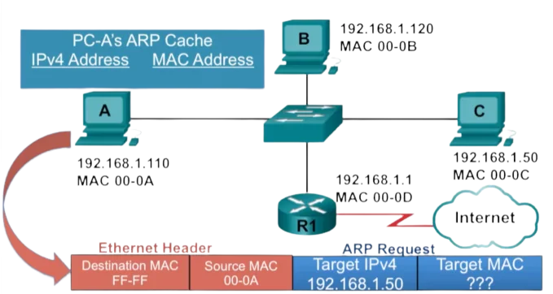

¿Qué es y cuándo se creó?La dirección MAC (Media Access Control) es un identificador único asignado a la interfaz de red de un dispositivo para la comunicación en una red. Las direcciones MAC se utilizan comúnmente en redes Ethernet y Wi-Fi. La primera aparición de las direcciones MAC está asociada con la implementación de Ethernet.
|
|||
|  |
La dirección MAC (Media Access Control) es un identificador único asignado a la interfaz de red de un dispositivo. Esta dirección juega un papel crucial en el funcionamiento de las redes, especialmente en entornos Ethernet y Wi-Fi. Aquí te doy una visión general de cómo funciona la dirección MAC: |
||
1. Identificación ÚnicaCada dispositivo de red tiene una dirección MAC única a nivel mundial. No hay dos dispositivos con la misma dirección MAC en una red dada. |
2. Capa de Enlace de DatosLa dirección MAC opera en la capa de enlace de datos del modelo OSI, que es la segunda capa. En esta capa, los datos se encapsulan en tramas antes de ser transmitidos a través del medio físico. |
3. Acceso al MedioEn entornos Ethernet, la dirección MAC se utiliza para el control de acceso al medio (MAC), lo que significa que ayuda a gestionar cómo los dispositivos acceden y transmiten datos en un medio compartido, como un cable Ethernet. |
4. FormatoLa dirección MAC tiene un formato específico, que suele expresarse como seis bloques de dos dígitos hexadecimales separados por dos puntos (por ejemplo, 01:23:45:67:89:ab). Los primeros tres bloques representan el identificador de fabricante, conocido como OUI (Organizational Unique Identifier), y los últimos tres bloques son asignados por el fabricante a la interfaz de red específica. |
5. Dirección Broadcast y MulticastExisten direcciones MAC especiales para la transmisión de datos a todos los dispositivos en una red (dirección de broadcast) o a un grupo específico de dispositivos (dirección multicast). |
6. Asignación Dinámica y EstáticaLas direcciones MAC pueden asignarse de manera estática, donde son configuradas manualmente en el dispositivo, o de manera dinámica a través de protocolos como DHCP (Dynamic Host Configuration Protocol). |
7. Funcionamiento en Redes InalámbricasEn redes inalámbricas, la dirección MAC sigue siendo fundamental. Los dispositivos Wi-Fi utilizan la dirección MAC para identificar y comunicarse entre sí. |
||